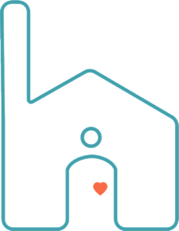
Case Study · Accenture · 2019, Boston
Haley
Haley is a mobile application that aims to bring continuous care to patients who have been discharged from the hospital. Patients enter their symptoms and moods on a regular basis on the app, and Haley in return provides suggestions and advice to the patients. The data collected from monitoring symptoms and moods is also relayed back to the patient’s doctor.
Haley was built as a demo app for Pega World. The overall purpose was to showcase Pega CRM capabilities within the healthcare industry to potential customers at their largest conference of the year in Las Vegas.
I led the design phase and led daily standups with our engineering team to ensure the demo app was built on time for the conference.
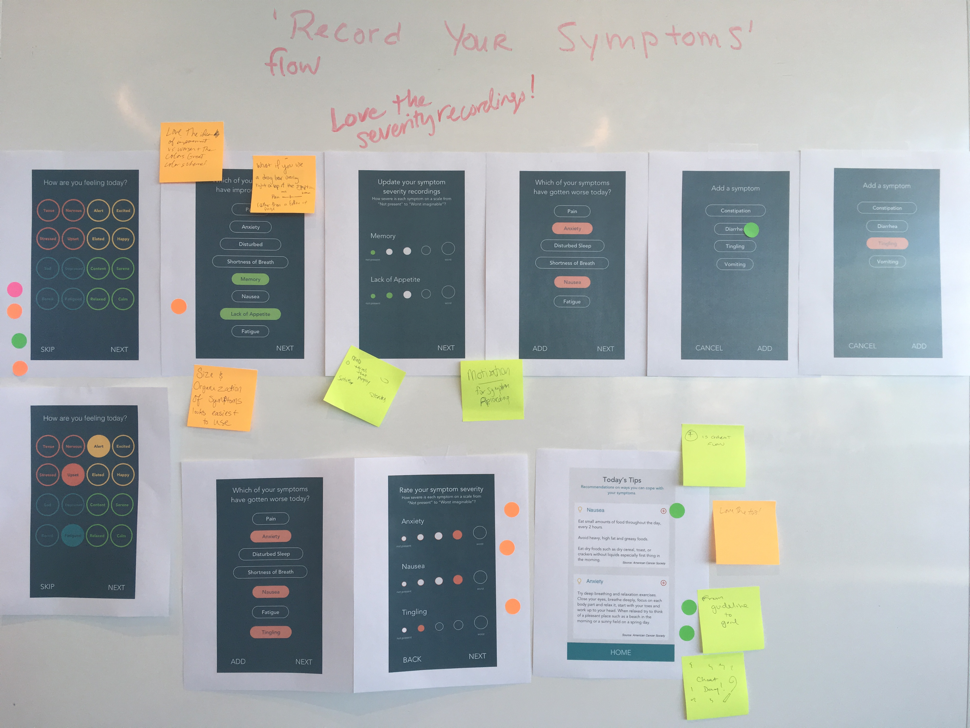
The Problem
Care shouldn’t stop at discharge
When patients leave the hospital, the day-to-day signal their doctors rely on disappears. Haley set out to close that gap — giving patients a simple daily way to log how they feel, and giving their care team a continuous view of symptoms and moods once they’re home.
For the ideation phase, I created different visual styles of the app. After pushing pixels, I held a drop-in style design crit at the Accenture office. A sticker dot voting system was used for individuals to vote on their favorite features.
1 pink dot
Overall look and feel
2 dots — green or orange
Favorite features
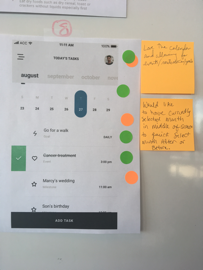
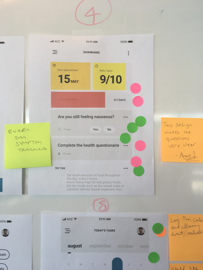
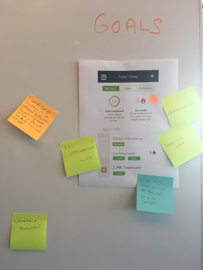
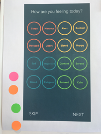
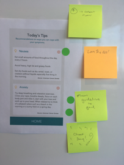
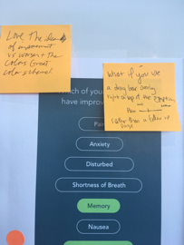
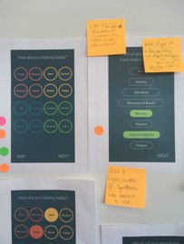
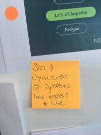
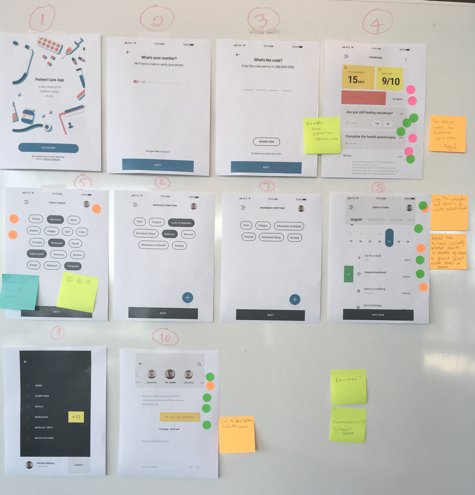
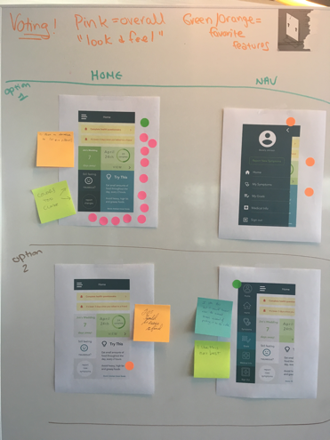
Recording of symptoms got the most feedback. People preferred the random layout versus stacked as the stacked was viewed as a hierarchical.
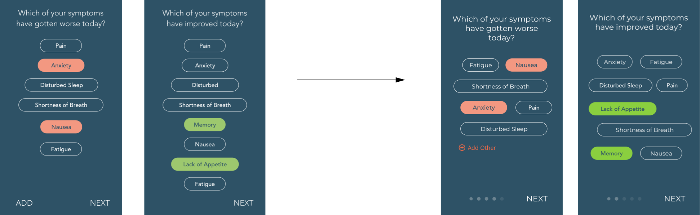
Severity scaling was viewed positively with the colors indicating severity rather than circle size.
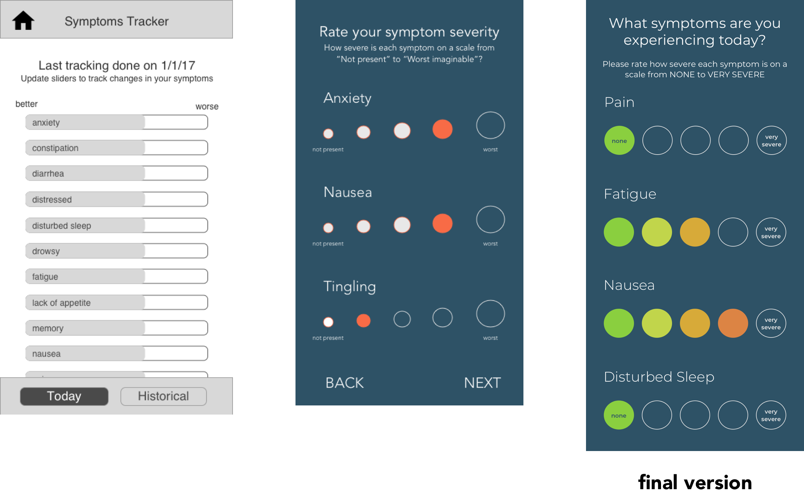
Filling out health surveys is perceived as stressful and tedious paperwork. The guided onboarding process of one question per screen, with indication of progress at the top helped users feel a sense of completion.
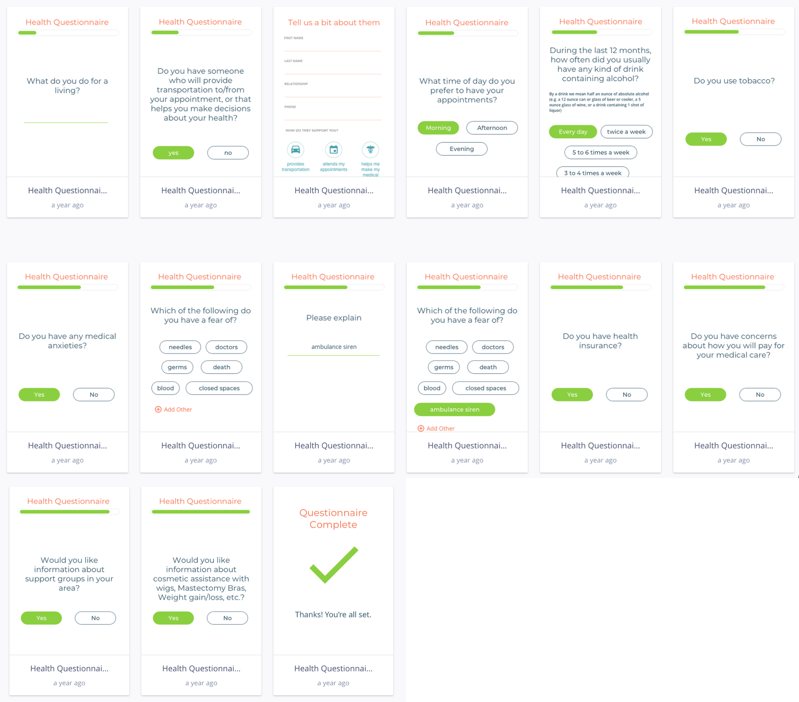
Final Outcome
Presented at Pega World
A demo app was built and preloaded with sample patients, then presented at Pega World — and considered a success, measured in new relationships, signed contracts, and a demo that sold the vision.